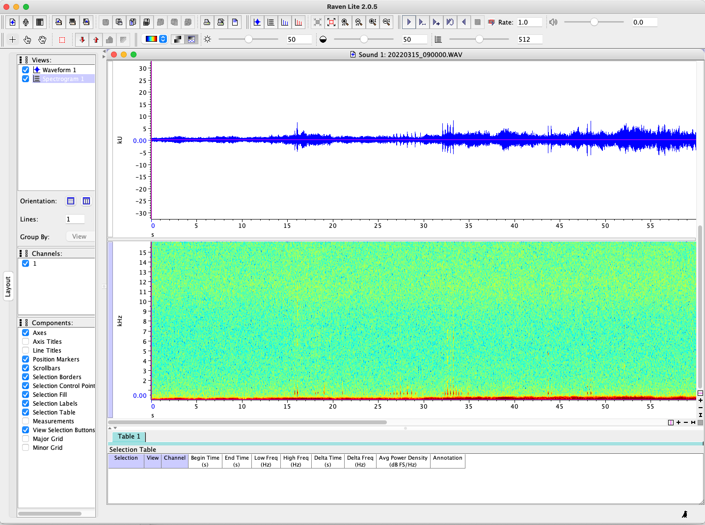
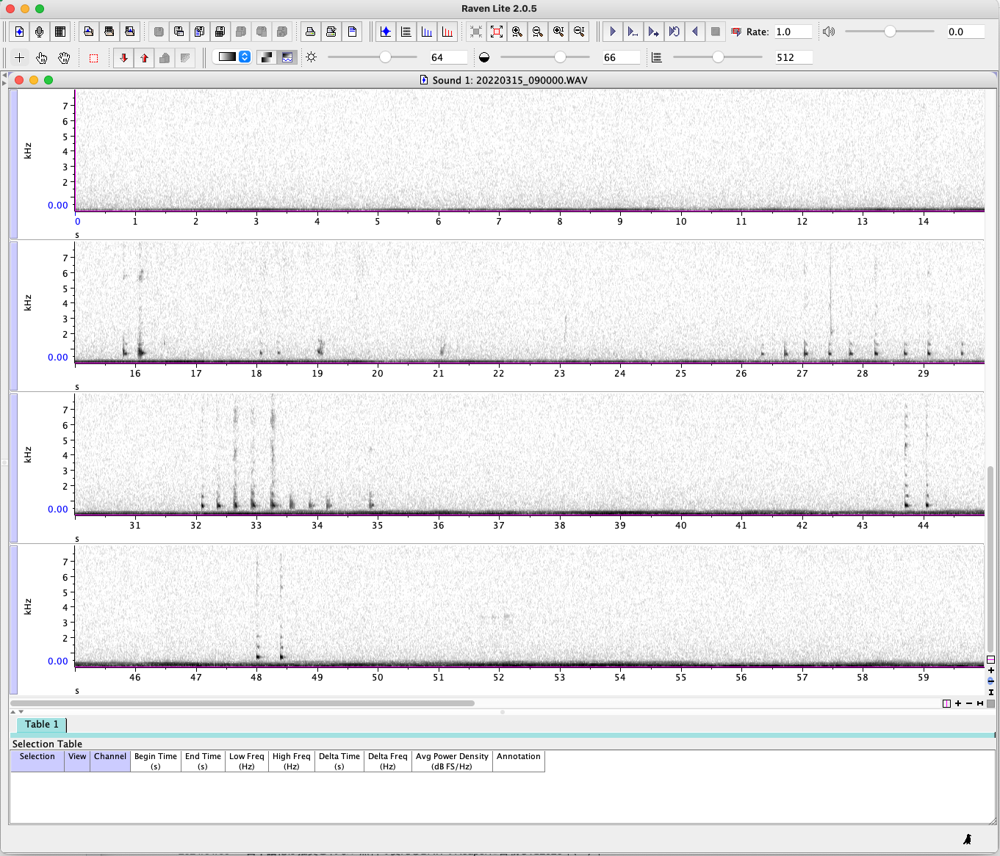
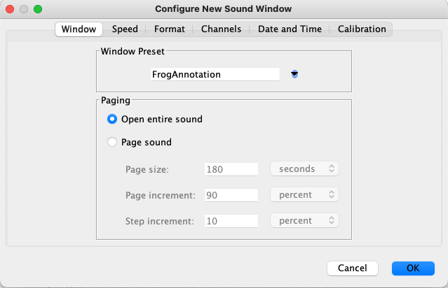
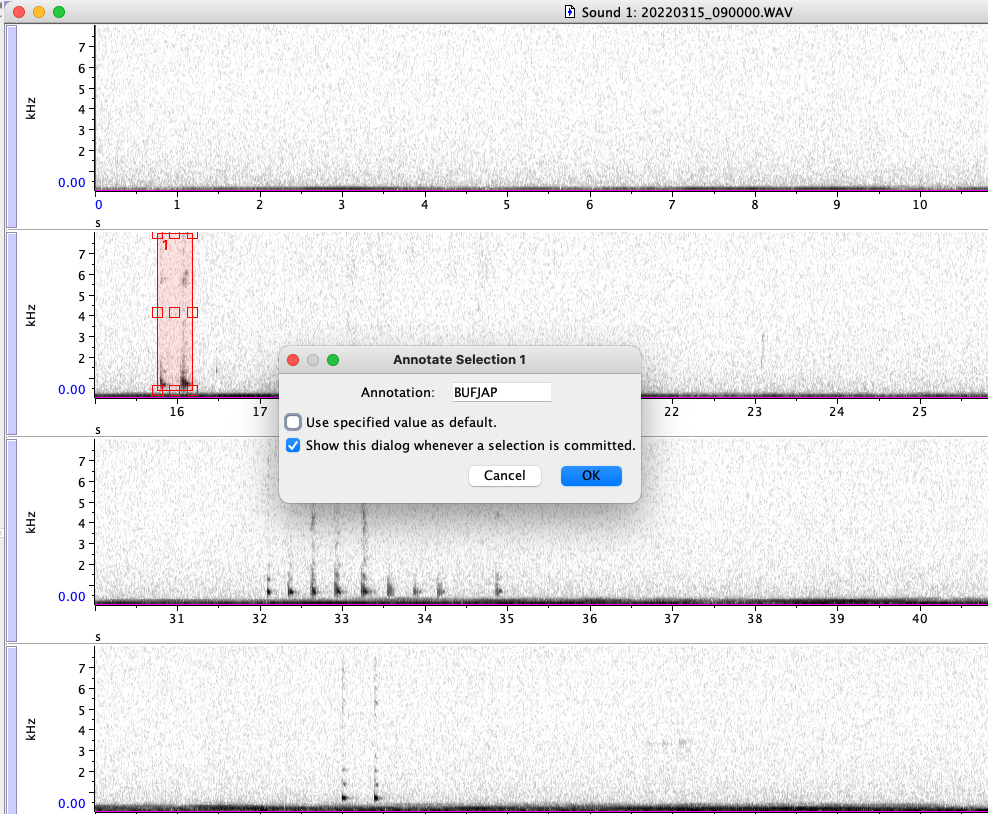
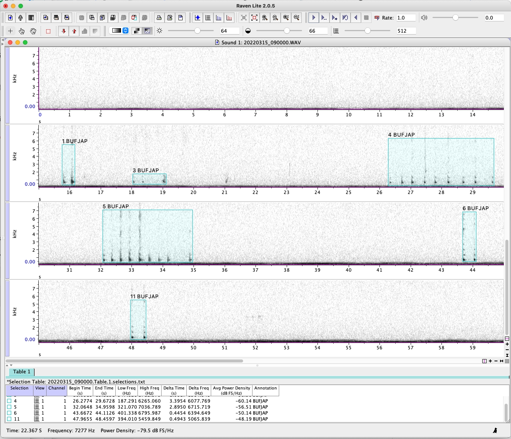
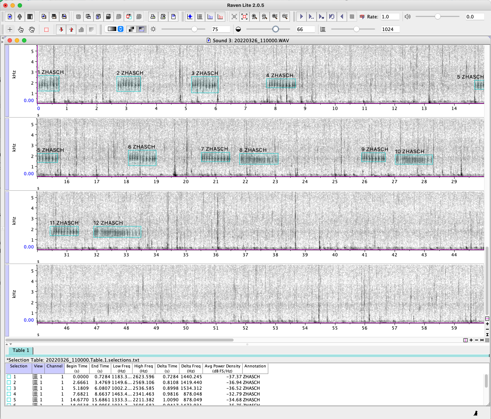

2 アノテーション
2.1 はじめに
ここでは、野外に設置した音声レコーダーを用いてカエルの鳴き声を録音した、あるいは録音する予定であるという状況を想定し、得られた録音データの解析方法を扱います。同様の手法がカエル以外の生物でも適用可能ですが、コウモリなど可聴域を超える音声については後に紹介するBirdNETが未対応です。
種を判定するためのディープラーニングモデルを作るには、まず対象種の訓練データが必要となります。このために、データに対し種名等のラベルを付けることをアノテーションといいます。日本産のカエル類ではアノテーション済みの公開データは非常に少ないため、多くの場合、調査者がアノテーションを行うか、あるいは合成音声を作成する必要があります。ここでは野外環境に近いデータに基づき訓練を行うため、野外録音をアノテーションする方法を紹介します。
アノテーション用のソフトとして、生物音響分野ではRaven Pro/Lite（Proは有料版。無料版のLiteでもアノテーションは可能）やAudacityを利用している例が多いようです。これらのソフトは音響解析一般を扱うもので、必ずしも大量のファイルをアノテーションすることに最適化されているわけではありませんが、ユーザーが多く動作が安定しているため、扱いやすいと思いました。ここではRaven Liteを用いてアノテーションする方法を紹介します。
2.2 セットアップ
インストール
Raven Liteのページからソフトのインストールを行ってください。インストール方法については全国鳥類繁殖分布調査による解説 https://www.bird-atlas.jp/data/download.pdf があります。
インストールが完了したらRaven Liteを起動します。以下では初期設定とアノテーションの流れを扱います。より詳しいRavenの操作方法はYoutubeでわかりやすい 解説 があります。動画は英語ですが必要に応じて字幕>自動翻訳を使うこともできます。
設定
続いてRavenの表示設定をアノテーションしやすいように調整します。試しにサンプルデータ（Section 1.2）でダウンロードしたデータのうちの一つ（sample_data/train/20220315_090000.WAV）をRavenで開いてみましょう。ファイルをRavenの画面にドラッグアンドドロップし、OKを押すと Figure 2.1 のような表示になるかと思います（Macでの画面です）。
訓練用のサンプルデータはsample_dataフォルダ内のtrainフォルダに入っています。このようなフォルダの構造をsample_data/trainと記しています。
このデータは京都市の山中の小さな池にAudiomoth（OpenAcoustics社製）というレコーダーを設置して録音されたものです。各ファイルの長さは60秒です。もともと Kimura and Sota (2023) で扱ったデータをRavenを用いてアノテーションし直したものになります。すべてのサンプル音声データはアノテーション済みで、サンプルの音声データと同じフォルダ内に、アノテーション結果を保存したtxtファイルも含めています。

画面上部には波形が、下部はスペクトログラムが表示されています。この音源にはヒキガエルの鳴き声が含まれていますが、デフォルトの設定では表示が小さくアノテーションしにくいので、設定を変更します。定まった方法があるわけではなく好みの問題ですが、個人的には以下のような設定で表示させています。
- 波形を非表示にする（Waveform 1 のチェックを外す Figure 2.2)
- 4段表示にする（Lines: 1 を Lines: 4に変更する）。
- 白黒表示にして、明るさとコントラストを少し上げる（初期設定の50から、70くらいに変更）。
- 表示される周波数の上限を7 kHzほどまで下げる（画面右端の＋マークをクリックして、周波数方向に拡大表示をする）。
さらに、
- アノテーションしたとき種名ラベルが画面上に表示されるようにする。
- 画面上で右クリック > Configure Selection Labels > Available ItemsからAnnotationを選択後、「<<」 ボタンを押し、Displayed Itemsに移動させる。同時にFont sizeを14まで小さくする。
これにより Figure 2.3 のように表示されます。

この状態で画面を右クリックし、Window Presets > Save as… から表示設定を保存してください。たとえばFrogAnnotationといった後からわかる名前にします。次回以降、音声を読み込む際にはWindow PresetをFrogAnnotationに変更することで 、ここで定めた表示設定で音声を読み込むことができます（Figure 2.4）。

2.3 アノテーション
2.3.1 鳴き声のアノテーション方法
再生ボタン（▶）から音声を聞いて、何の種がいつ鳴いているかを確認します
鳴き声の範囲をマウスでドラッグすると、四角いボックスが赤色で描かれます
そのままEnterをクリックするとAnnotation（どんなラベルを付けるか）を聞かれるので、種名を記録します（Figure 2.5）。
私は Cañas et al. (2023) をまねて、学名の属名と種小名の冒頭３文字をAnnotationに記載しています。たとえばニホンヒキガエル Bufo japonicus であればBUFJAPです。このとき「Use specified value as default」にチェックをいれると、同じファイルのなかで別の領域を選択した場合にBUFJAPが記入された状態から始まるので、何度も同じ文字を打ち込む必要がなく、ミスを減らせます。

これをすべての鳴き声について続けると、 Figure 2.6 のようアノテーションできます。今回はすでにアノテーションされたデータをdataフォルダに含めているので保存する必要はありませんが、実際に自分のデータをアノテーションする場合は File > Save Selection Table “Table 1” から結果を保存できます。


2.3.2 アノテーションの基準
どのようにアノテーションするかについて定まった方法はありません。北米の鳥(Chronister et al. (2021)) やブラジルのカエル(Cañas et al. (2023))についてアノテーションされたデータセットが公開されているため、手法の検討のうえで参考にしました。
なお、サンプルデータの作成にあたっては以下の基準でカエルの鳴き声をアノテーションしました。
- 同種の鳴き声で、鳴き声の間隔が0.5秒未満のものは一つの鳴き声として四角で囲った。
- 音を聞くとかろうじて聞こえるものでも、スペクトログラム上でほとんど表示されない鳴き声については無視した。
- 種不名の鳴き声は「frog」というラベルをつけた。
2.3.3 どれだけアノテーションするのか
アノテーションは時間と手間のかかる作業です。どれだけアノテーションする必要があるか、一概には言えないようですが、たとえばBirdNETのドキュメントでは各種最低100サンプル以上を推奨しています。BirdNETの場合、3秒間を一つの解析処理の単位として扱うため、3秒の音声ファイルが100個（合計300秒）ということになります。個人的な経験でも、背景音のノイズが比較的少なく、鳴き声が明瞭に聞こえる場合にはこれくらいの分量で一定の精度が出るような感覚があります。各種100サンプル以上用意できたら一度モデルを訓練してみて、目標とする性能に達していなければ、アノテーションを追加するという作業を繰り返すのが良いように思います。
ディープラーニングでは訓練データに含まれないような音声があると適切に判断できないことが多いので、なるべく様々な種類の背景音（雨・救急車の音・異なる鳥や虫の声など）が含まれるようアノテーションする音声ファイルを選ぶことが推奨されます。
2.4 その他のアノテーションソフト
はじめに（2.1） で述べたように、Raven Liteは大量のファイルをアノテーションすることに必ずしも最適化されていないと感じます。生物音響用のアノテーションに特化したソフトを開発している論文も複数あり、たとえば Deep Audio Segmenter (Steinfath et al. (2021)) や Whombat (Balvanera et al. (2023)) が挙げられ、それぞれに面白い機能を持っています。生物音響解析ソフトまとめているサイトには他の選択肢も載っています。
このうちのいくつかMacで使えるものを試してみましたが、インストールにPythonの環境構築が必要だったり、動作が不安定だったりと、自分で使う分には慣れればなんとかなるものの、他人に勧めるという観点からはRavenが現状一番かなと感じました。